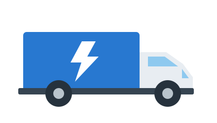
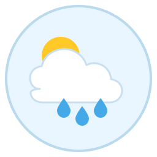
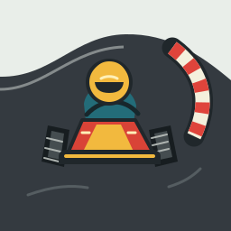

easy magnifying glass
A black outlined magnifying glass, centered, on a transparent background.
At 24 px:
635 total; 331 input; 304 outputOctober 8, 2026 · gpt-6-luna · one live generation per prompt · seven server-validated SVGs · no scorer ratings yet
A black outlined magnifying glass, centered, on a transparent background.
At 24 px:
635 total; 331 input; 304 outputA blue folder icon with a small white star in the center.
At 24 px:
826 total; 330 input; 496 outputAn outlined shopping cart with two wheels and three differently colored packages inside.
At 24 px:
1,588 tokens · 331 input · 1,257 output tokensA shield icon with a centered checkmark, rounded corners, and consistent stroke width.
At 24 px:
740 tokens · 334 input · 406 output tokens
A small delivery truck facing right, with two wheels, a blue cargo box, and a white lightning bolt on the cargo box.
At 24 px:
1,148 tokens · 343 input · 805 output tokens
A circular weather icon showing a yellow sun partly hidden behind a white cloud, with exactly three blue raindrops below.
At 24 px:
1,246 tokens · 341 input · 905 output tokens
A compact SVG icon of a go-kart viewed from the front, rounding a left-hand corner from the driver’s perspective. Include a helmeted driver, a low chassis, exposed tires, and front wheels turned toward the viewer’s right. Place the kart close to a red-and-white curb on the viewer’s right, along the inside edge of the bend. Use a simple curved asphalt track, bold shapes, and a limited color palette. Keep the kart recognizable at small sizes.
At 24 px:
3,362 tokens · 413 input · 2,949 output tokens